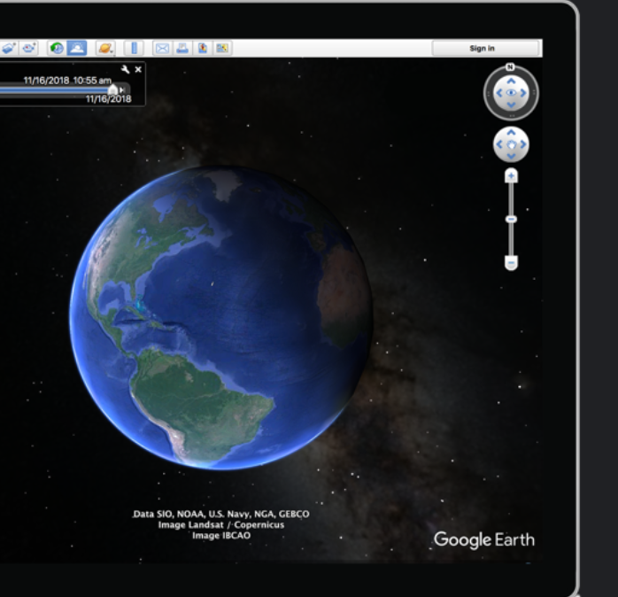
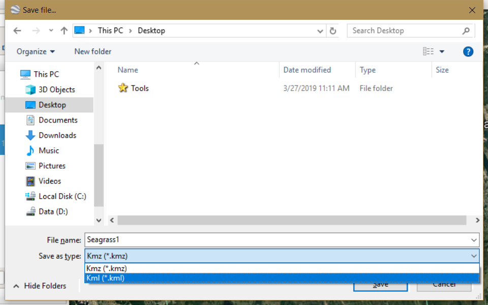

1 minute read
Google Earth on desktop is free for users with advanced feature needs. It's a really useful resource allowing users to import and export Geographic Information System (GIS) data, and go back in time with historical imagery. Available for free for download on PC, Mac, or Linux. We've created this quick guide for our friends new to Google Earth. Happy mapping!

After download and install of Google Earth Pro, open Google Earth software.
Zoom into the region of interests. Click "Add polygon" in the upper toolbar.
Within the pop-up new polygon window, name the polygon. Then go ahead to draw a polygon on the map.
Click "ok" to save the polygon, then right click the newly created polygon on the left panel, select "Save Place As..."
Select KML type and save to the computer.

Updated: March 29, 2019